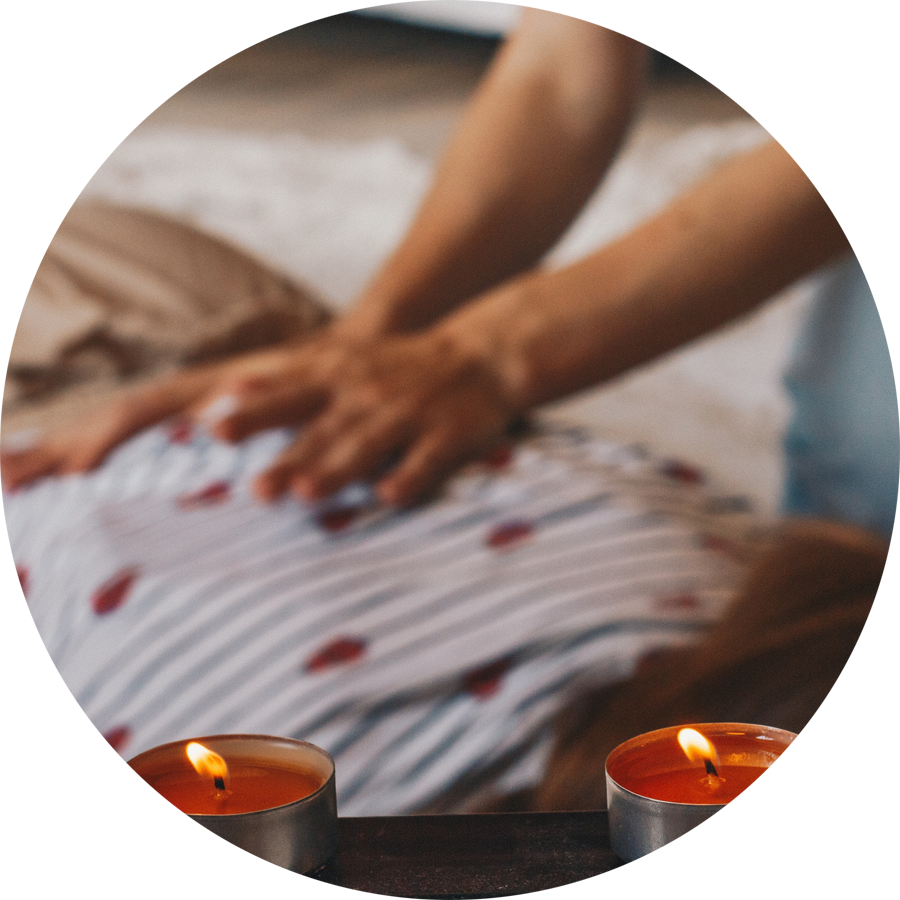
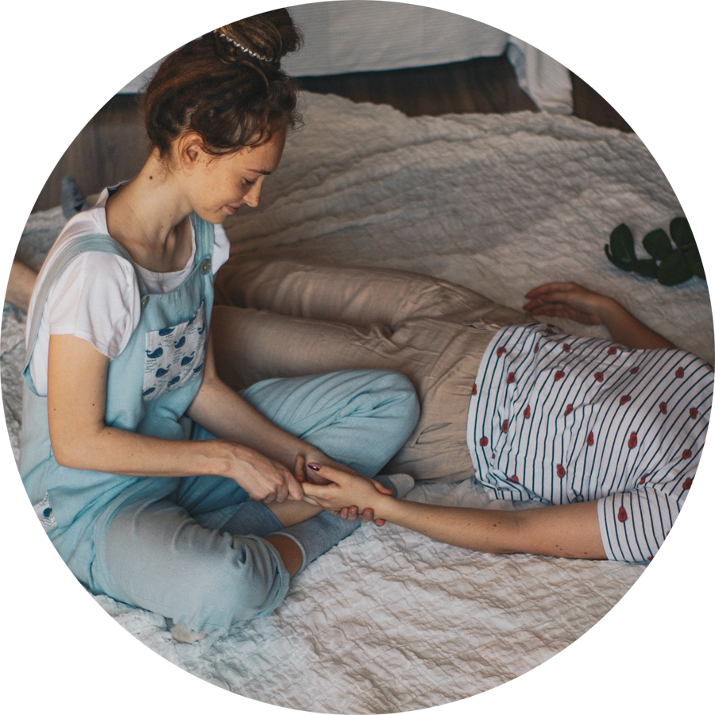
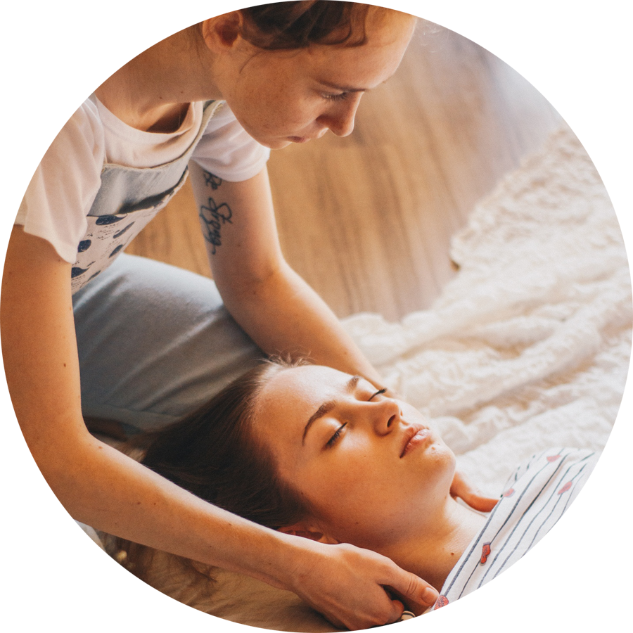
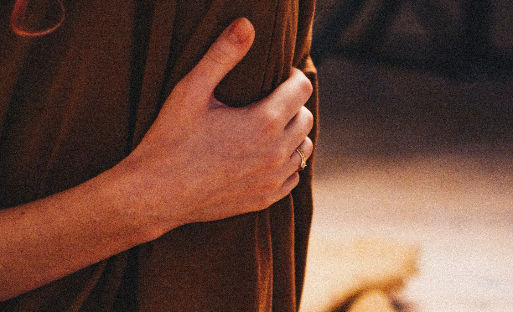

Психологическое консультирование, телесная терапия
Привет, меня зовут Марина. Я психолог, телесный терапевт.
Я веду частную практику, работаю со взрослыми людьми в рамках телесно-ориентированной терапии, психологического консультирования и массажа.
Работаю как очно (в центре Петербурга, м. Петроградская), так и в онлайн формате.
Тело даёт нам куда больше информации о нас, чем может показаться на первый взгляд.
А на сеансах мы учимся взаимодействовать с собственным телом так, чтобы слышать "маячки"-подсказки.
С каким запросами работаю

- Восстановить связь между головой и телом, а следовательно восстановить всю цепочку: чувства-мысли-поведение
- Есть неприятные ощущения в теле, (например: «будто ком в горле стоит», «чувствую, что давит в груди что-то тяжелое», «на спине будто висит огромный рюкзак, неудобно» и т.д.)
- Отреагирование чувств (печаль, обида, гнев, страх, стыд, вина)
- Проживание горя (проживание потери или расставания с близкими людьми)

- Напряжение в детско-родительской и супружеской системах
- Трудности в карьере (например: отношения в коллективе, с начальством, с клиентами, результативность, Ваша удовлетворённость в рабочем процессе и т.д.)
- Поиск своего ресурса ( усталость; нересурсное состояние; не получается то, чего очень хочется; «руки опускаются»)
- Желание ощущать себя безопасно в своём теле (Вам хочется справляться с переживаниями так, чтобы они проживались, а не застывали и напоминали о себе в виде телесных симптомов. Хочется тепла и уюта в теле, свободы в движениях. Если это отзывается, тогда запрос 8 для Вас)

- Хроническое напряжение в теле и трудности в расслаблении
- Соматические симптомы ( при этом телесная терапия не заменяет необходимую врачебную помощь)
- Потеря смысла жизни
- Недостаток уверенности в своих силах, раскрытие потенциала личности
Причины записаться на сеанс

- Вы чувствуете, что Вам нехорошо в своём теле
- Тело посылает «маячки» в виде заболеваний, дискомфорта и усталости
(возможно, настал тот самый момент прийти себе на помощь)
- Вы замечаете, что одна и та же история повторяется с Вами из раза в раз
- Есть тема, которая Вас беспокоит и Вы не можете обсудить её с друзьями и родными. Или Вы делитесь, но разговоры не приносят облегчения
- Вы переживаете кризисное состояние, связанное с жизненными обстоятельствами, и понимаете, что хорошо бы заручиться поддержкой психолога
- Вы испытываете много разных чувств и не понимаете, откуда их столько и как с ними справляться.
Телесная терапия не заменяет посещение врачей, особенно при наличии соматического симптома